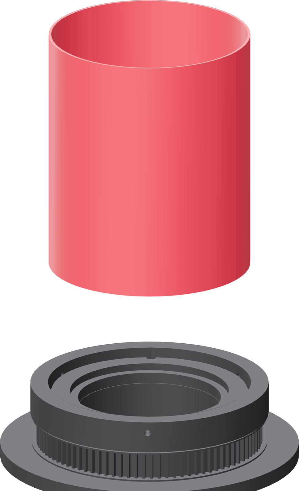
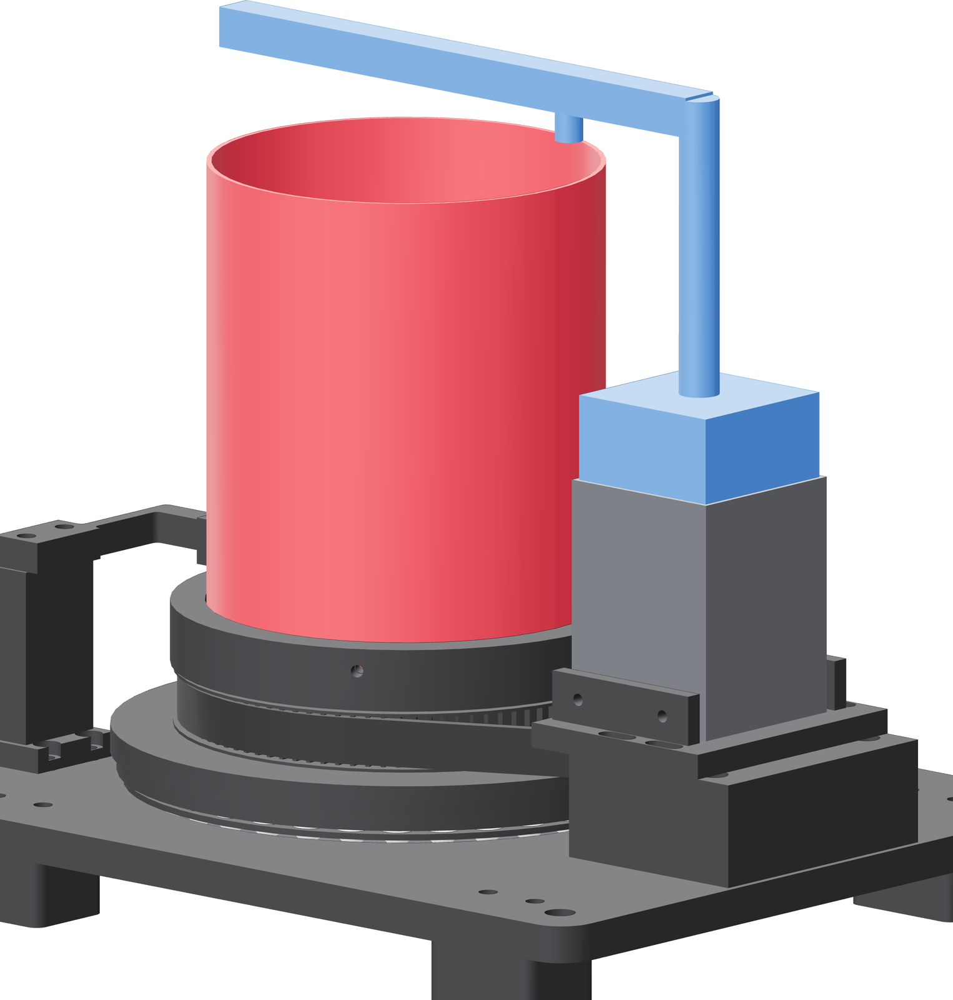

The tube, and the indicator
The first time a tube goes in. Two readings decide whether this fixture is good enough to weld on: radial runout and end-cap face runout.


- Back all three adjuster tips fully clear. Drop the tube in until its cut rim seats.
- Bring all three adjusters to light contact, then advance them in small equal increments.
- Seat the indicator's magnetic base on the NEMA 23's bare steel lamination stack — it will not hold on PET-GF or on 316L. Lock both arm joints and shake-test it.
- Put the contact on the tube OD as close to the working end as head clearance allows, jog one slow revolution, and read total indicated runout.
- Adjust the three screws until radial TIR is at or below 0.25 mm.
- Seat and tack the end plate per pressure-vessel.md, then read the face at the weld circle separately.
Gate — two numbers
Radial runout at the weld end ≤ 0.25 mm TIR. End-cap face runout at the weld circle ≤ 0.30 mm TIR. A part outside either limit is not corrected with more screw force. Check the lower rim is seated, then square the tube end or correct the end-cap seat.